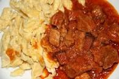

|
| Tápérték |
| Fehérje |
2% |
| Szénhidrát |
|
34% |
| Zsír |
45g |

Pörkölt nokedlivel
a leghagyományosabb recept 1896-ban lett megalkotva Kotányi János által.
Hozzávalók:
- 2ek zsír
- 2fej vöröshagyma
- 2ek pirospaprika
- só
- 60dkg sertéscomb
ELKÉSZÍTÉS
- A sertéspörkölt elkészítéséhez a vöröshagymát megtiszítjuk, felkockázzuk, és 1 evőkanál felolvasztott zsíron megdinszteljük.
- Amikor már üveges, meghintjük pirospaprikával, összekeverjük, majd 1 perc múlva, nehogy a paprika odakapjon és megkeseredjen, mehet bele a kb. 1x1 centis kockákra vágott hús.
- Összekeverjük, megsózzuk, és egy pár percig, közepes lángon, időnként megkeverve pároljuk. Ráöntünk kb. 1 dl forró vizet, ismét megkeverjük, és közepes lángon, fedő alatt puhára főzzük.
- Amikor már állagra megfelelő, fedő nélkül főzzük pár percig, hogy a szaft jó sűrű legyen.
- A pörkölthöz nokedlit szaggatunk, és azzal tálaljuk.